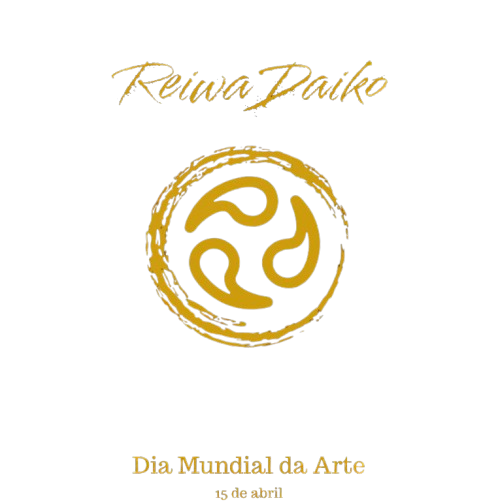
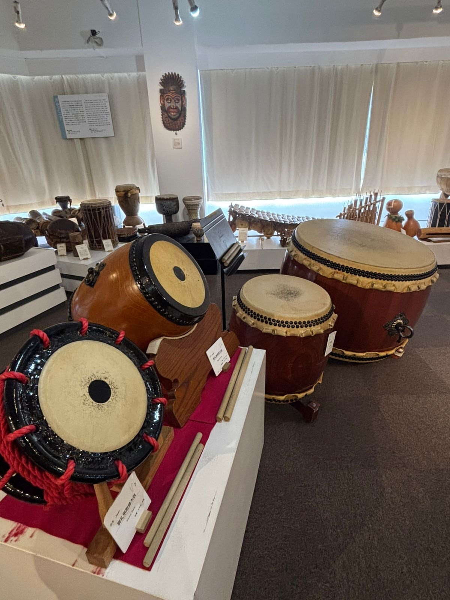
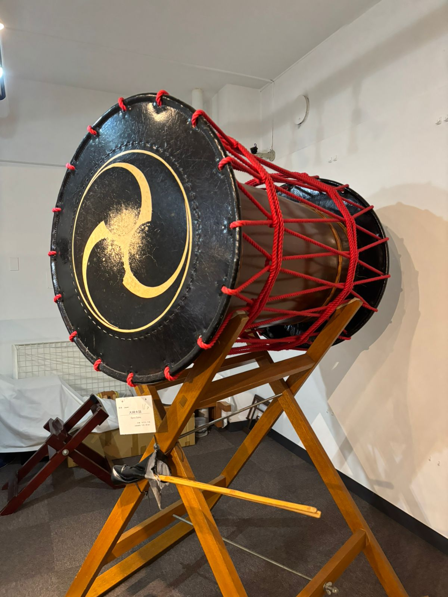
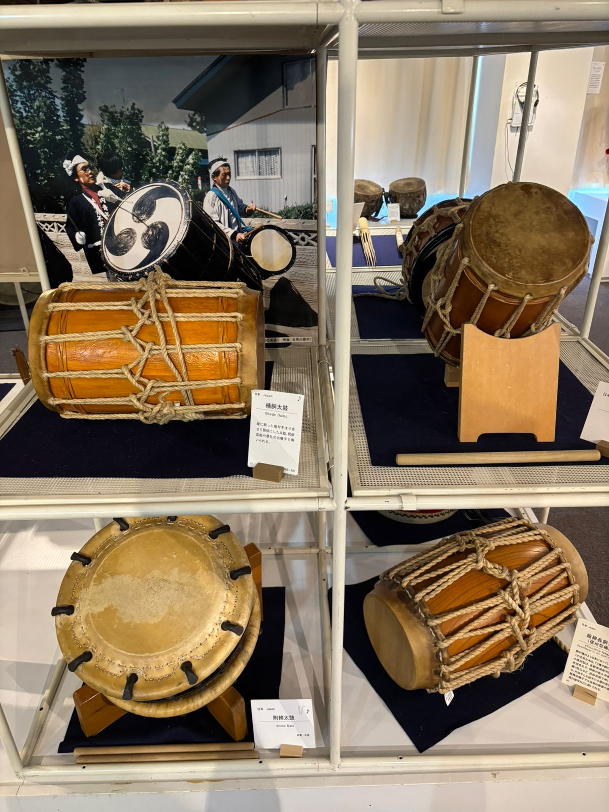
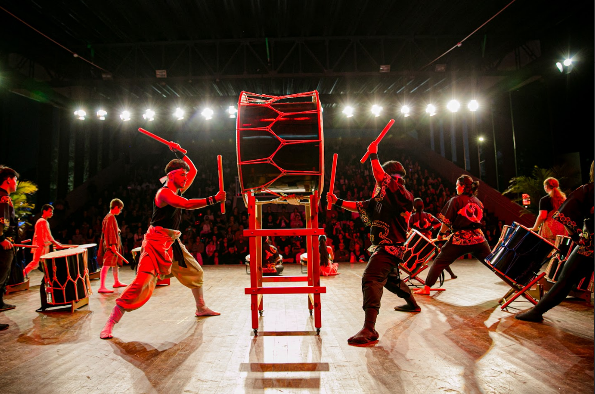
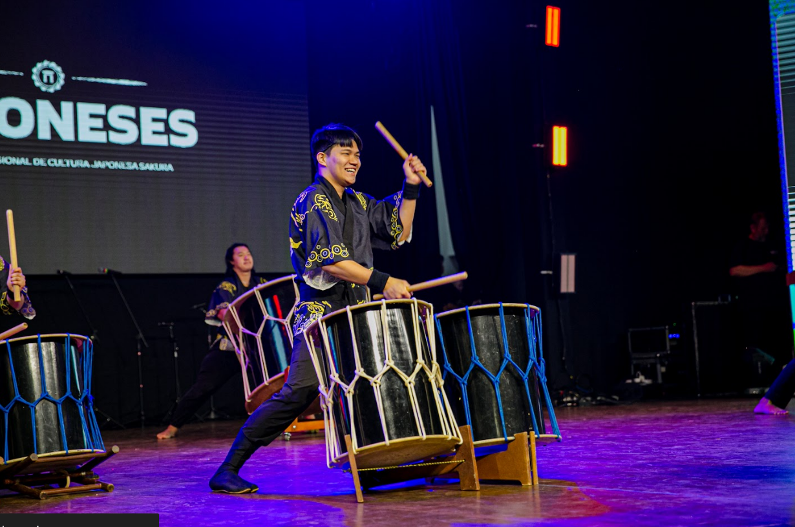
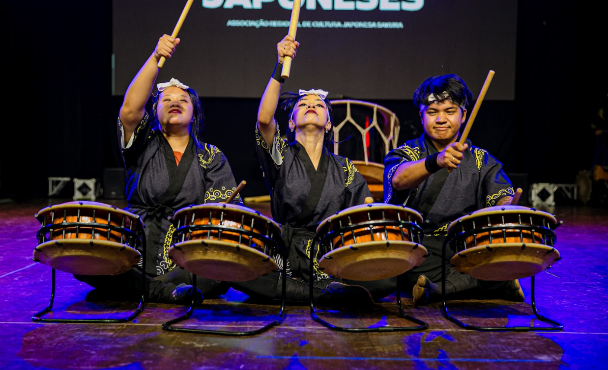
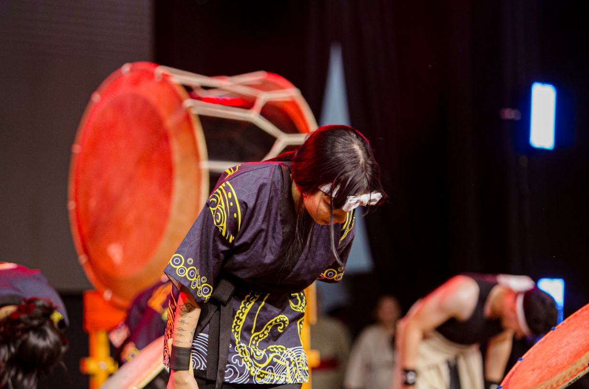
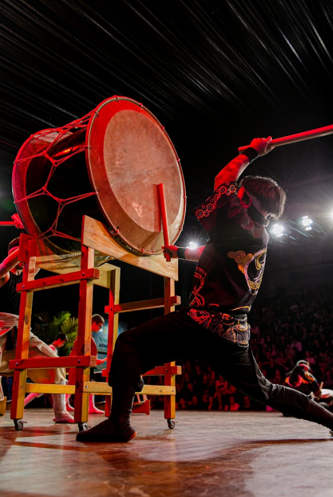

A Arte Milenar da Percussão Japonesa
O Que É Taiko?
Taiko (太鼓), signfica tambor em japonês, é a arte milenar japonesa de percussão que transcende a simples execução musical. Mais do que instrumentos, os tambores taiko representam a conexão profunda entre o homem, a natureza e o divino na cultura japonesa.
Com mais de 2000 anos de história, o taiko era originalmente utilizado em rituais religiosos, comunicação durante batalhas e celebrações comunitárias. Hoje, essa arte se transformou em uma forma de expressão que combina força física, disciplina espiritual e harmonia coletiva.
Cada batida ressoa não apenas como som, mas como a pulsação do coração humano, o ritmo da natureza e a energia vital do universo - uma experiência que une performers e audiência em um único momento de transcendência.

Tambor versátil de corpo cilíndrico, essencial para ritmos dinâmicos

O grande tambor, símbolo de poder e majestade sonora

Tambor compacto de alta tensão, cria ritmos precisos e agudos
O dia Mundial da Arte, é um convite para enxergar, sentir e viver o mundo com mais sensibilidade. Um dia voltado para aquilo que tranforma emoções em cores, sons em sentimentos e ideais em algo eterno.
O Taiko representa perfeitamente essa celebração ao unir tradição e contemporaneidade, técnica e emoção. Cada apresentação é uma obra de arte viva que dialoga com a ancestralidade japonesa e ressoa no coração das pessoas ao redor do mundo.
令和





Energia e tradição japonesa
Ritmo e intensidade